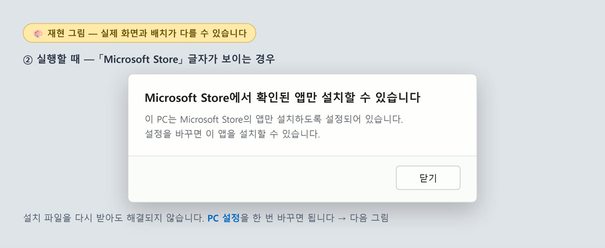
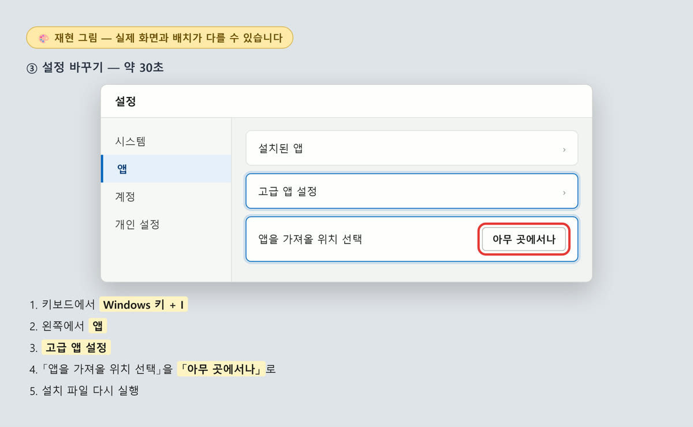
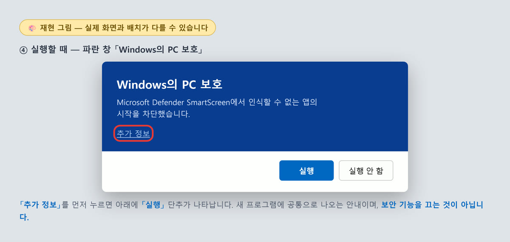
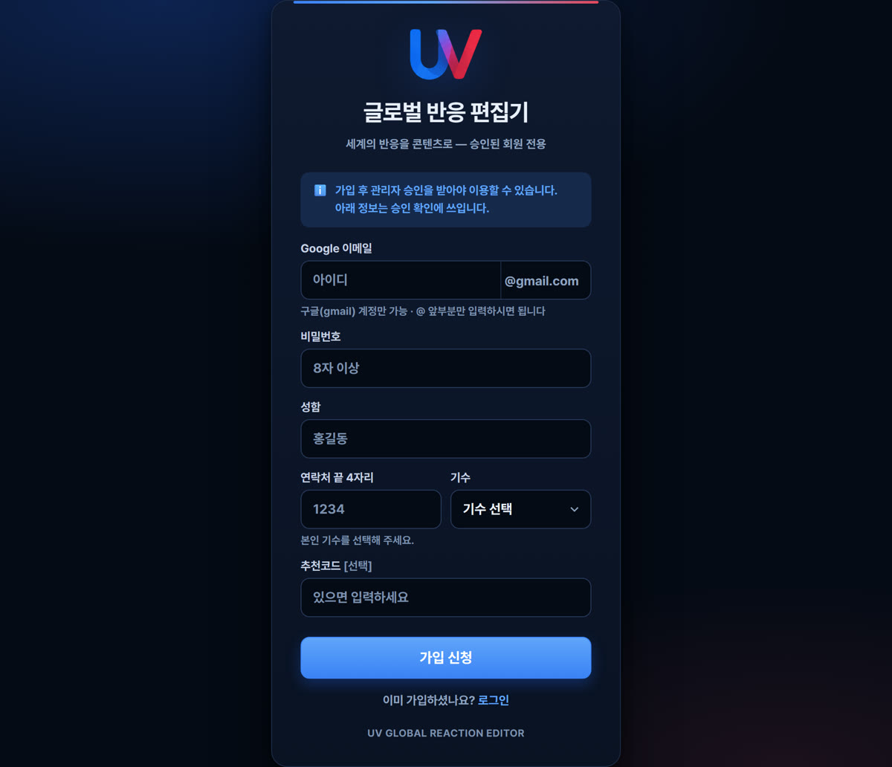
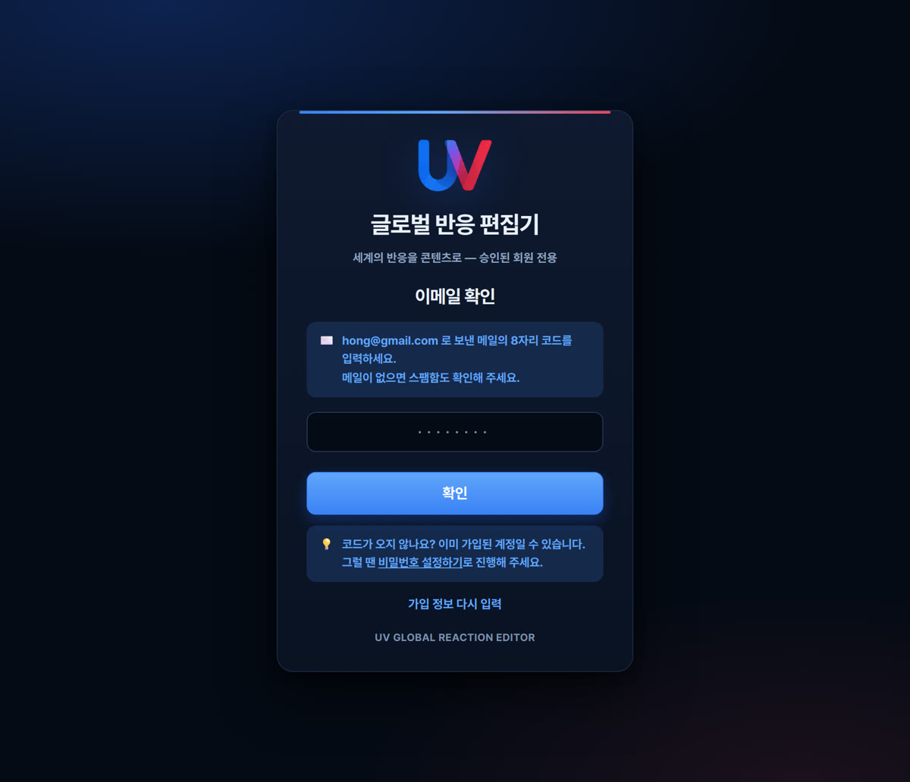

설치 안내
설치할 때 나올 수 있는 안내 화면과 그 대처를 순서대로 정리했습니다. 설치가 막히는 것이 아니라, 새 프로그램이라 확인을 한 번 더 받는 것입니다.
백신이나 Windows 보안 기능을 끄라는 안내는 이 문서에 없습니다. 어떤 이유로든 그런 안내를 받으셨다면 따르지 마시고 담당자에게 알려 주세요.
1받을 때 — 「일반적으로 다운로드되지 않는 파일」
브라우저가 아래처럼 안내할 수 있습니다. (브라우저마다 화면이 다릅니다)
파일이 크고 아직 배포 이력이 적어서 나오는 안내입니다.
대처
- 브라우저의 다운로드 목록을 엽니다
- 해당 파일 옆의 「보관」(또는 「계속」·「유지」)을 누릅니다
2실행할 때 ① — 「Microsoft Store」 글자가 보이면

PC 설정이 스토어 앱만 허용하도록 되어 있는 경우입니다. 설치 파일을 다시 받아도 해결되지 않고, 설정을 한 번 바꾸면 됩니다 (약 30초).

대처
- 키보드에서 Windows 키 + I — 설정 창이 열립니다
- 왼쪽에서 앱 을 누릅니다
- 고급 앱 설정 을 누릅니다
- 맨 위 「앱을 가져올 위치 선택」 을 「아무 곳에서나」 로 바꿉니다
- 설정 창을 닫고 설치 파일을 다시 실행합니다
이렇게 해도 안 될 때
- 3번 「고급 앱 설정」이 안 보이면 — Windows 버전에 따라 앱 → 앱 및 기능 안에 있습니다
- 회색으로 잠겨 바꿀 수 없으면 — 회사·학교에서 관리하는 PC 입니다. 해당 조직의 IT 담당자를 통해야 합니다
- 「고급 앱 설정」 항목 자체가 없으면 — S 모드 PC 입니다. Microsoft Store 에서 「S 모드 해제」(무료)를 해야 설치할 수 있는데, 한 번 해제하면 되돌릴 수 없습니다. 진행 전에 담당자와 확인해 주세요
3실행할 때 ② — 파란 창 「Windows의 PC 보호」
2절을 해결하신 분은 이어서 이 화면을 만나게 됩니다. 아직 설치 이력이 적은 새 프로그램에 공통으로 나오는 안내입니다.

대처
- 「추가 정보」 를 누릅니다
- 아래에 나타나는 「실행」 을 누릅니다
이후에는 일반적인 설치 화면이 진행됩니다. 이 절차는 그 창의 단추를 누르는 것이며 보안 기능을 끄는 것이 아닙니다.
4받은 파일이 보이지 않을 때
다운로드한 파일이 목록에도 폴더에도 없으면, 백신이 따로 보관(격리)한 경우일 수 있습니다.
프로그램 관련 문제는
raion.log@gmail.com 으로도 받습니다.
5설치 파일이 맞는지 확인하는 방법 (선택)
받은 파일이 배포된 것과 같은지 직접 확인하실 수 있습니다.
- 설치 파일이 있는 폴더에서 주소창에
powershell을 입력하고 Enter - 아래를 붙여넣고 Enter
Get-FileHash -Algorithm SHA256 -LiteralPath ".\UV-Global-Reaction-Editor_1.2.8_x64-setup.exe"나온 값이 아래와 같으면 정상입니다.
b62f7363dc2b161dc946023ec7ae0c41cf2064333b383295d47a5fbbff28e5126설치 뒤 — 로그인과 가입 신청
설치가 끝나면 프로그램 첫 화면이 로그인입니다. 가입 신청 후 승인을 받아야 작업을 시작할 수 있습니다.
처음이신 경우

- 로그인 화면에서 「가입 신청」 을 누릅니다
- 아래를 입력합니다
- Google 이메일 —
@gmail.com앞부분만 입력합니다 (구글 계정만 가능) - 비밀번호 — 8자 이상
- 성함 · 연락처 끝 4자리
- 기수 — 목록에서 고릅니다
- 추천코드 — 따로 받으신 분만 입력하세요
- Google 이메일 —
- 「가입 신청」 을 누르면 입력한 주소로 8자리 코드가 담긴 메일이 갑니다
- 그 코드를 입력해 이메일을 확인합니다
- 승인 대기 화면이 나옵니다. 승인 후 이용할 수 있습니다

코드 메일이 오지 않을 때
먼저 스팸함을 확인해 주세요. 그래도 없으면 이미 가입된 계정일 수 있습니다 (같은 이메일로 전에 가입한 경우, 보안상 확인 메일이 다시 가지 않습니다). 이때는 코드 입력 화면 아래의 「비밀번호 설정하기」 로 진행하시면 됩니다.
알아두실 것
- 계정은 1인 1개입니다
- 한 계정으로 최대 2대의 PC 에서 사용할 수 있습니다
- 승인은 직접 확인 후 진행됩니다. 신청 즉시 열리지 않습니다
7담당자용 — 문의가 왔을 때 원인을 가르는 질문
설치가 안 된다는 문의는 아래 한 질문으로 대부분 갈립니다.
| 답 | 원인 | 안내할 절 |
|---|---|---|
| 「Microsoft Store」 글자 | PC 설정이 스토어 앱만 허용 | 2절 (그리고 이어서 3절) |
| 파란 창 | 새 프로그램이라 이력 없음 | 3절 |
| 다운로드 중 경고 | 파일이 크고 이력이 적음 | 1절 |
| 파일이 사라짐 | 백신이 격리 | 4절 — 설정을 바꾸게 하지 말고 접수 |
- 「SmartScreen 을 끄세요」·「백신 예외를 등록하세요」·「실시간 보호를 끄세요」는 안내하지 않습니다. 사용하는 분의 PC 보호를 영구히 낮추는 조치입니다
- 2절을 해결한 분은 곧바로 3절 화면을 만납니다. 두 절을 함께 안내해 주세요
- 백신 격리(4절)는 접수만 하고, 실제 사례가 모이면 배포 담당이 일괄 처리합니다